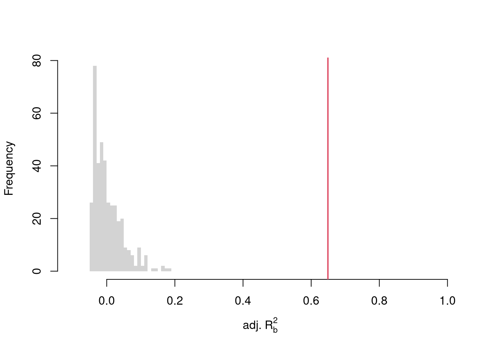

library(plotly)# Scatter PlotUSArrests$ID <-rownames(USArrests)fig <-plot_ly( USArrests, x =~UrbanPop, y =~Assault,mode='markers',type='scatter',hoverinfo='text',text =~paste('<b>', ID, '</b>',"<br>Urban :", UrbanPop,"<br>Assault:", Assault,"<br>Murder :", Murder),color=~Murder,marker=list(size=~Murder,opacity=0.5,showscale=T, colorbar =list(title='Murder Arrests (per 100,000)')))fig <-layout(fig,showlegend=F,title='Crime and Urbanization in America 1975',xaxis =list(title ='Percent of People in an Urban Area'),yaxis =list(title ='Assault Arrests per 100,000 People'))fig
15.1 Multiple Linear Regression
With \(K\) variables, the linear model is \[\begin{eqnarray}
\hat{Y}_{i}=b_0 + b_1 \hat{X}_{i1}+ b_2 \hat{X}_{i2}+\ldots+b_K \hat{X}_{iK}+e_i
\end{eqnarray}\] Grouping the coefficients as a vector \(B=(b_0 ~~ b_1 ~~... ~~ b_{K})\). Our objective is \[\begin{eqnarray}
\min_{B} \sum_{i=1}^{n} e_{i}^2,
\end{eqnarray}\] which yields the best fitting coefficients \(\hat{B^{*}}\).
We can also again compute sums of squared errors. Adding random data may sometimes improve the fit, however, so we adjust the \(\hat{R}^2\) by the number of covariates \(K\). \[\begin{eqnarray}
\hat{R}^2 = \frac{\hat{ESS}}{\hat{TSS}}=1-\frac{\hat{RSS}}{\hat{TSS}}\\
\hat{R}^2_{\text{adj.}} = 1-\frac{n-1}{n-K}(1-\hat{R}^2)
\end{eqnarray}\]
The linear model has a fairly simple solution for \(\hat{B}^{*}\) if you know linear algebra. Denoting \(\hat{\mathbf{X}}_{i} = [1~~ \hat{X}_{i1} ~~...~~ \hat{X}_{iK}]\) as a row vector, we can write the model as \(\hat{Y}_{i} = \hat{\mathbf{X}}_{i}B + e_{i}\). We can then write the model in matrix form \[\begin{eqnarray}
\hat{Y} &=& \hat{\textbf{X}}B + E \\
\hat{Y} &=& \begin{pmatrix}
\hat{Y}_{1} \\ \vdots \\ \hat{Y}_{N}
\end{pmatrix} \quad
\hat{\textbf{X}} = \begin{pmatrix}
1 & \hat{X}_{11} & ... & \hat{X}_{1K} \\
& \vdots & & \\
1 & \hat{X}_{n1} & ... & \hat{X}_{nK}
\end{pmatrix}
\end{eqnarray}\] Minimizing the squared errors: \(\min_{B} e_{i}^2 = \min_{B} (E' E)\), yields coefficient estimates and predictions \[\begin{eqnarray}
\hat{B^{*}} &=& (\hat{\textbf{X}}'\hat{\textbf{X}})^{-1}\hat{\textbf{X}}'\hat{Y}\\
\hat{y} &=& \hat{\textbf{X}} \hat{B^{*}} \\
\hat{E} &=& \hat{Y} - \hat{y} \\
\end{eqnarray}\]
So far, we have discussed cardinal data where the difference between units always means the same thing: e.g., \(4-3=2-1\). There are also factor variables
Ordered: refers to Ordinal data. The difference between units means something, but not always the same thing. For example, \(4th - 3rd \neq 2nd - 1st\).
Unordered: refers to Categorical data. The difference between units is meaningless. For example, \(D-C=?\)
To analyze either factor, we often convert them into indicator variables or dummies; \(\hat{D}_{c}=\mathbf{1}( \text{Factor} = c)\). One common case is if you have observations of individuals over time periods, then you may have two factor variables. An unordered factor that indicates who an individual is; for example \(\hat{D}_{i}=\mathbf{1}( \text{Individual} = i)\), and an order factor that indicates the time period; for example \(\hat{D}_{t}=\mathbf{1}( \text{Time} \in [\text{month}~ t, \text{month}~ t+1) )\). There are many other cases you see factor variables, including spatial ID’s in purely cross sectional data.
Be careful not to handle categorical data as if they were cardinal. E.g., generate city data with Leipzig=1, Lausanne=2, LosAngeles=3, … and then include city as if it were a cardinal number (that’s a big no-no). The same applied to ordinal data; PopulationLeipzig=2, PopulationLausanne=3, PopulationLosAngeles=1.
With factors, you can still include them in the design matrix of an OLS regression. For example, \[\begin{eqnarray}
\hat{Y}_{i} = b_{0} + \hat{X}_{i} b_{1} + \sum_{t}\hat{D}_{t}b_{t}
\end{eqnarray}\] When, as commonly done, the factors are modeled as being additively seperable, they are modeled “fixed effects”.1 Simply including the factors into the OLS regression yields a “dummy variable” fixed effects estimator. The fixed effects and dummy variable approach are algebraically equal: same coefficients and same residuals. (See Hansen Econometrics, Theorem 17.1)
With fixed effects, we can also compute averages for each group: \(\hat{M}_{Yt}=\sum_{i}^{n_{t}} \hat{Y}_{it}/n_{t}\), where each period \(t\) has \(n_{t}\) observations denoted \(\hat{Y}_{it}\). We can then construct a between estimator: \(\hat{M}_{Yt} = b_{0} + \hat{M}_{Xt} b_{1}\). Or we can subtract the average from each group to construct a within estimator: \((\hat{Y}_{it} - \hat{M}_{Yt}) = (\hat{X}_{it}-\hat{M}_{Xt})b_{1}\).
15.2 Variability Estimates
Above, we computed the coefficient \(\hat{B}\) for a particular sample: \(\hat{X}_{1i}, \hat{X}_{2i}, ..., \hat{Y}_{i}\). We now seek to know how much the best-fitting coefficients \(B^{*}\) varies from sample to sample. I.e., \(\hat{B}\) is our estimate and we want to know the variance of our estimator: \(\mathbb{V}(B^{*})\). To estimate this variability, we can use the same data-driven methods introduced previously.
As before, we can also conduct independent hypothesis tests using t-values. However, we can also conduct joint tests that account for interdependancies in our estimates. For example, to test whether two coefficients both equal \(0\), we bootstrap the joint distribution of coefficients.
We can also use an \(F\) test for any \(q\) hypotheses. Specifically, when \(q\) hypotheses restrict a model, the degrees of freedom drop from \(k_{u}\) to \(k_{r}\) and the residual sum of squares \(\hat{RSS}=\sum_{i}(\hat{Y}_{i}-\hat{y}_{i})^2\) typically increases. We compute the statistic \[\begin{eqnarray}
\hat{F}_{q} = \frac{(\hat{RSS}_{r}-\hat{RSS}_{u})/(k_{u}-k_{r})}{\hat{RSS}_{u}/(n-k_{u})}
\end{eqnarray}\]
If you test whether all \(K\) variables are significant, the restricted model is a simple intercept and \(\hat{RSS}_{r}=\hat{TSS}\), and \(\hat{F}_{q}\) can be written in terms of \(\hat{R}^2\): \(\hat{F}_{K} = \frac{\hat{R}^2}{1-\hat{R}^2} \frac{n-K}{K-1}\). The first fraction is the relative goodness of fit, and the second fraction is an adjustment for degrees of freedom (similar to how we adjusted the \(\hat{R}^2\) term before).
To conduct a hypothesis test, first compute a null distribution by randomly reshuffling the outcomes and recompute the F statistic, and then compare how often random data give something as extreme as your initial statistic. For some intuition on this F test, examine how the adjusted \(\hat{R}^2\) statistic varies with bootstrap samples.
Code
# Bootstrap under the nullboots <-1:399boot_regs0 <-lapply(boots, function(b){# Generate bootstrap sample xy_b <- USArrests b_id <-sample( nrow(USArrests), replace=T)# Impose the null xy_b$Murder <- xy_b$Murder[b_id]# Run regression reg_b <-lm(Murder~Assault+UrbanPop, dat=xy_b)})# Get null distribution for adjusted R2R2adj_sim0 <-sapply(boot_regs0, function(reg_k){summary(reg_k)$adj.r.squared })hist(R2adj_sim0, xlim=c(-.1,1), breaks=25, border=NA,main='', xlab=expression('adj.'~R[b]^2))# Compare to initial statisticabline(v=summary(reg)$adj.r.squared, lwd=2, col=2)

Note that hypothesis testing is not to be done routinely, as additional complications arise when testing multiple hypothesis sequentially.
Under some additional parametric assumptions about the data generating process, the F-statistic follows an \(F\) distribution. This case is well-studied historically, often under the title Analysis of Variance (ANOVA). An important case corresponds to the restricted model having no explanatory variables (i.e., our model is \(\hat{Y}_{i}=b_{0}\) and our predictions are \(\hat{y}_{i}=\hat{M}_{Y}\)).
Code
reg_full <-lm(Murder ~ Assault + UrbanPop + Rape, data = USArrests)reg_none <-lm(Murder ~1, dat=USArrests)anova(reg_none, reg_full)## Analysis of Variance Table## ## Model 1: Murder ~ 1## Model 2: Murder ~ Assault + UrbanPop + Rape## Res.Df RSS Df Sum of Sq F Pr(>F) ## 1 49 929.55 ## 2 46 304.83 3 624.72 31.424 3.322e-11 ***## ---## Signif. codes: 0 '***' 0.001 '**' 0.01 '*' 0.05 '.' 0.1 ' ' 1# Manual F-testrss0 <-sum(resid(reg_none)^2) # restrictedrss1 <-sum(resid(reg_full)^2) # unrestricteddf0 <-df.residual(reg_none)df1 <-df.residual(reg_full)F <- ((rss0 - rss1)/(df0-df1)) / (rss1/df1) # observed F statp <-1-pf(F, df0-df1, df1) # where F falls in the F-distributioncbind(F, p)## F p## [1,] 31.42399 3.322431e-11
Whether you take a parametric or nonparametric approach to hypothesis testing, you can easily test whether variables are additively separable with an F test.
Code
# Empirical Examplereg1 <-lm(Murder~Assault+UrbanPop, USArrests)reg2 <-lm(Murder~Assault*UrbanPop, USArrests)anova(reg1, reg2)## Analysis of Variance Table## ## Model 1: Murder ~ Assault + UrbanPop## Model 2: Murder ~ Assault * UrbanPop## Res.Df RSS Df Sum of Sq F Pr(>F)## 1 47 312.87 ## 2 46 300.93 1 11.944 1.8258 0.1832
Code
## # Simulation Example## N <- 1000## x <- runif(N,3,8)## e <- rnorm(N,0,0.4)## fo <- factor(rbinom(N,4,.5), ordered=T)## fu <- factor(rep(c('A','B'),N/2), ordered=F)## dA <- 1*(fu=='A')## y <- (2^as.integer(fo)*dA )*sqrt(x)+ 2*as.integer(fo)*e## dat_f <- data.frame(y,x,fo,fu)## ## reg0 <- lm(y~-1+x+fo+fu, dat_f)## reg1 <- lm(y~-1+x+fo*fu, dat_f)## reg2 <- lm(y~-1+x*fo*fu, dat_f)## ## anova(reg0, reg2)## anova(reg0, reg1, reg2)
There are also random effects: the factor variable comes from a distribution that is uncorrelated with the regressors. This is rarely used in economics today, however, and are mostly included for historical reasons and special cases where fixed effects cannot be estimated due to data limitations.↩︎